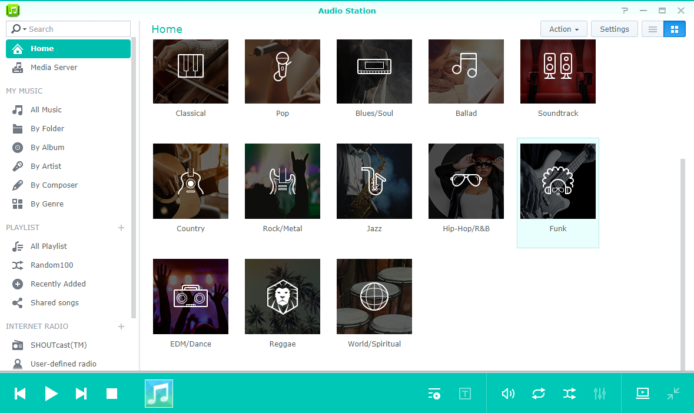
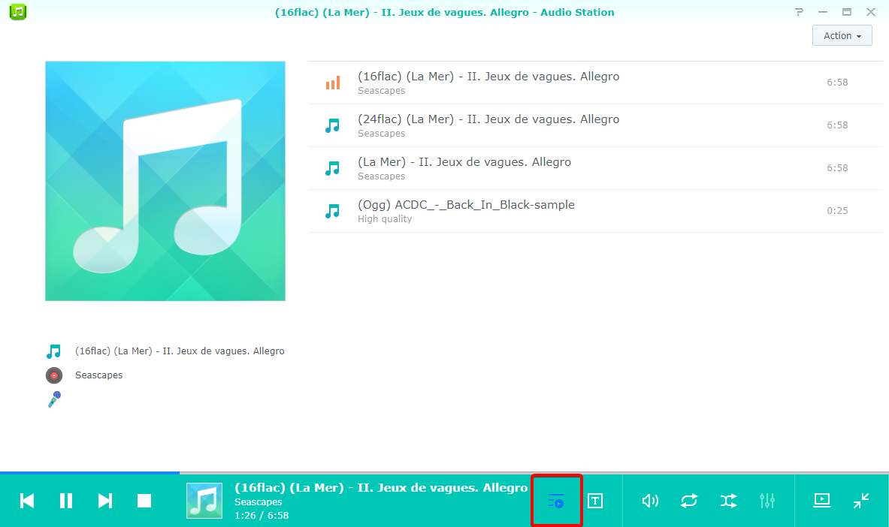

概要
Audio Station を活用すると、インターネットを介して Synology NAS に保管された音楽を参照したり、再生したりすることができます。Audio Station はさまざまなファイル形式に対応していますので、好きなフォーマットの音楽を自由に楽しむことができます。Audio Station を補足するモバイルアプリケーション、DS audio もダウンロードできます。これをダウンロードしておくと、外出先でも Synology NAS にある音楽にアクセスできます。
1. Audio Station をインストールする
- [パッケージセンター] を選択し、Audio Stationを探します。[インストール]をクリックします。

2. music フォルダにオーディオファイルを保管する
- [File Station] > [音楽]を選択し、[アップロード]をクリックします。
- music フォルダにアップロードしたいファイルをローカル コンピュータから選択します。

3. 音楽を参照する
音楽ファイルをアップロードしたら、Audio Station で音楽を再生したり、参照したりすることができます。ローカル ネットワーク外から音楽ファイルにアクセスしたり、参照したりするには、[コントロール パネル] > [QuickConnect]で QuickConnect を有効にしてください。Synology アカウントをまだお持ちでない方は、数分で設定できますので、DiskStation に QuickConnect ID を設定してください。このオプションを有効にすると、DSM にログインして好きな場所で音楽を楽しめるようになります。また、QuickConnect ID を使って DS audio にログインすることもできます。この方法なら、IP アドレスをいちいち覚えておく手間が省けます。
3.1 マイ ミュージック
左パネルの[マイ ミュージック]は[音楽]共有フォルダまたは Synology NAS の他のインデックス付きフォルダを含んでいます。[マイ ミュージック]セクションで、音楽はカテゴリ別に保存され、さまざまなオプションを提供します。これにより、[フォルダ別]、[アルバム別]、または[アーティスト別]など簡単にニーズや好みに応じて音楽を閲覧できます また、お気に入りの音楽コレクションを[ホーム]にピン留めして、[おすすめのジャンル]の音楽ジャンルに分類された曲を表示できます。曲を検索したい場合は、各カテゴリを選択して検索するか、あるいは検索バーのドロップダウン メニューから希望のカテゴリを選択してください。
3.2. 表示モード
Audio Station の右上にあるアイコンは、ミュージック ライブラリを参照するときに表示モードを切り換えるためのものです。
- リスト ビューでは、音楽が題名、アーティスト、アルバム、時間、トラック番号、評価などと一緒にリストされます。
- アートワークには、トラック名、アルバム名、アルバム アートワークが表示されます。
- 再生キューでは、アルバムのカバーと音楽の題名、または歌詞と一緒に全画面に再生キューが表示されます。 


4. 公開共有
Audio Station の公開共有機能を使うと、別のネットワークにいる人や Synology NAS を持っていない人にリンクを送信することで、好きな音楽を公開で共有することが可能になります。相手がリンクを受け取ると、相手も音楽を聴けるようになります。
4.1. 音楽を公開して共有
- 共有したい音楽を右クリックし、[公開して共有] を選択します。
- 公開で音楽を共有する場合、2つのオプションがあります。
- 1曲だけを共有する場合は、開いたダイアログ ボックスで [公開して共有] の横にあるボックスにチェックマークを付けて共有リンクを有効にします。
- 複数の音楽を共有する場合は、プレイリストが作成されます。プレイリストに名前を付けたり、リンクに有効期限を設けたりすることができます。[有効期間をカスタマイズ] にチェックマークを付けて、[OK] をクリックします。


- リンクをコピーして、プレイリストを共有したい相手に貼り付けます。または、[リンクを開く] をクリックすると、直接そのリンクにアクセスします。

5. モバイル デバイスで音楽を整理したり、楽しんだりする
DS audio は、iPad/iPhone/iPod touch と Android デバイスで実行されます。アプリは、Apple App Store、およびGoogle Playから無料で入手できます。以下の QR コードをスキャンすると、簡単にダウンロードできます。